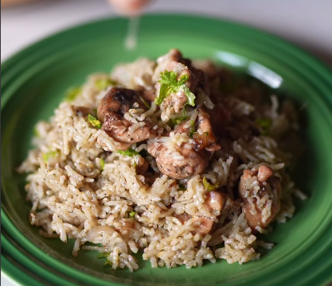

High Protein
One-Pot Ghee Chicken Rice
Cozy, fragrant, high-protein, and ridiculously easy—if yakhni pulao and biryani had a baby, it would be this. View on Instagram.
Prep Time
15 mins
Cook Time
20 mins
Total Time
35 mins
Servings
2–3
Calories
~480 kcal
Instructions
- Sauté whole spices: Heat 1–2 tbsp ghee in a heavy pot. Add cumin seeds, cardamom pods, cloves, and whole peppercorns. Sauté for a few seconds until fragrant.
- Brown onions & aromatics: Add sliced onion, minced garlic, and chopped chillies. Cook on medium flame until the onions turn golden brown.
- Cook chicken: Add bite-sized chicken thighs, salt, black pepper, and biryani masala. Sauté and cook for 5 minutes.
- Roast rice: Add the soaked and drained rice to the pot. Gently roast the rice along with the chicken and masala for 5 minutes.
- Cook: Pour in 400 ml hot water, cover tightly with a lid, and cook on low-medium heat for 12–15 minutes until water is absorbed and rice is cooked.
- Rest: Turn off the heat and let the pot rest covered for 5–6 minutes.
- Finish: Garnish with freshly chopped coriander and a generous squeeze of lemon juice. Fluff gently and serve hot! 🍚✨